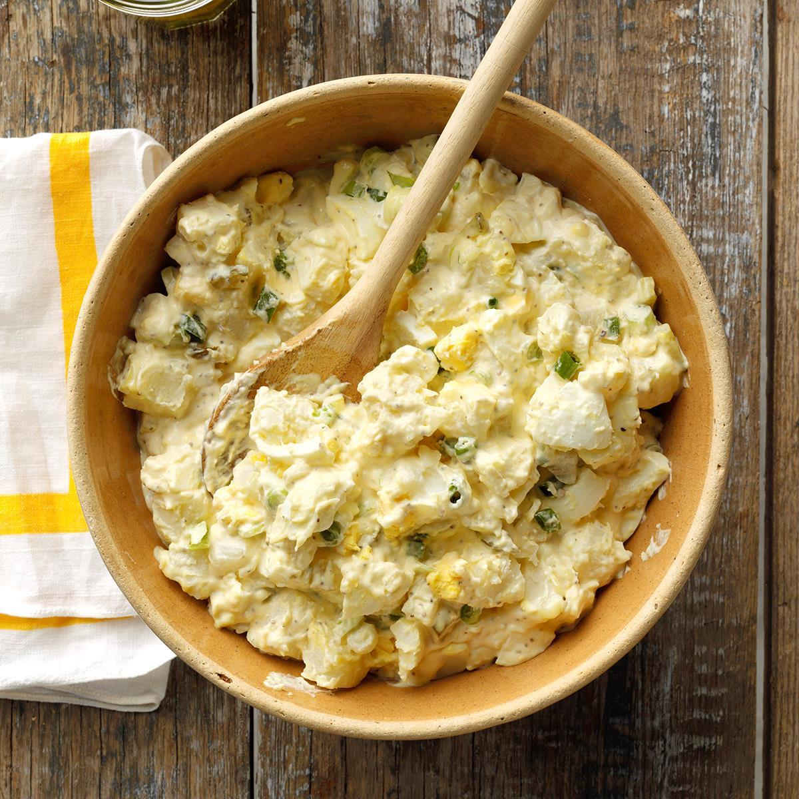

Homepage
Potato Salad

Description
Potato salad is a beloved classic in Southern American cuisine. It
features tender, boiled potatoes mixed with a creamy dressing of
mayo, mustard, and tangy apple cider vinegar or pickle juice.
Additional ingredients like hard-boiled eggs, pickles, onions, and
sometimes bacon add texture and flavor. Seasoned with salt, pepper,
and a hint of paprika or cayenne, this comforting side dish is
perfect for gatherings and barbecues, complementing a variety of
main dishes.
Ingredients
- Potatoes: 2 pounds, boiled and diced into bite-sized pieces
- Mayonnaise: 1 cup
- Mustard: 2 tablespoons
- Apple Cider Vinegar or Pickle Juice: 2 tablespoons
- Hard-boiled Eggs: 3, chopped
- Pickles: 1/4 cup, diced
- Onions: 1/4 cup, finely chopped
- Celery: 1/4 cup, finely chopped
- Green Onions: 1/4 cup, sliced
- Bacon: 4 slices, cooked and crumbled (optional)
- Salt: 1/2 teaspoon (adjust to taste)
- Black Pepper: 1/4 teaspoon (adjust to taste)
- Paprika or Cayenne Pepper: 1/4 teaspoon (adjust to taste)
Steps
- Boil the potatoes: Place the potatoes in a large pot, cover them
with water, and bring to a boil. Cook the potatoes until they
are fork-tender, about 15-20 minutes. Drain and let them cool
completely.
- Prepare the dressing: In a separate bowl, mix together the
mayonnaise, mustard, and apple cider vinegar or pickle juice.
Stir until well combined, creating a creamy dressing.
- Dice the potatoes: Once the potatoes are cooled, peel them
(optional) and dice them into bite-sized pieces. Place the diced
potatoes in a large mixing bowl.
- Add the ingredients: To the diced potatoes, add the chopped
hard-boiled eggs, pickles or pickle relish, onions, celery,
green onions, and crumbled bacon (if using).
- Season the salad: Pour the dressing over the potato mixture,
gently tossing everything together to coat the potatoes and
ingredients evenly. Season with salt and black pepper to taste.
- Chill and serve: Cover the bowl with plastic wrap and
refrigerate the potato salad for at least an hour to allow the
flavors to meld. Before serving, sprinkle paprika or cayenne
pepper on top for a touch of spice.
- Enjoy: Serve the chilled Southern potato salad as a delicious
side dish alongside your favorite meals.